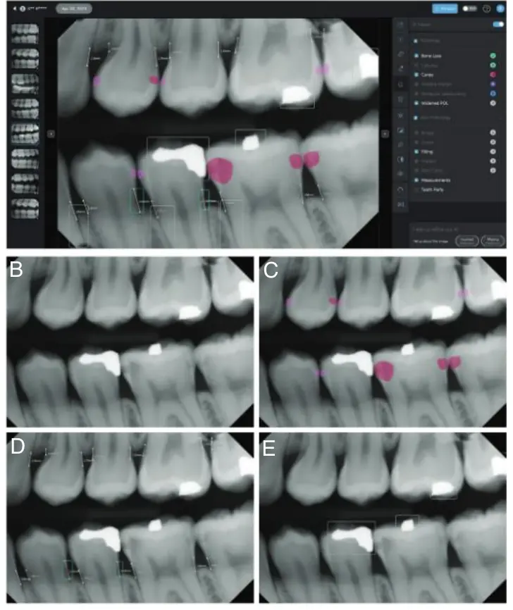
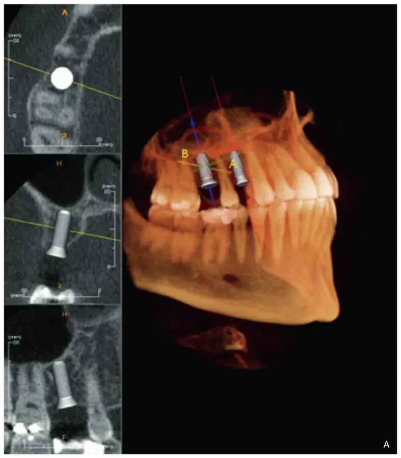

نسخه استخراجشده؛ ترجمه یا تأیید علمی انجام نشده است. وضعیت: captured
اصطلاح هوش مصنوعی را دانشمند رایانه جان مککارتی در ۱۹۵۵ نخستین بار معرفی کرد. و تعریفش: «ماشینهایی که وظایفی را انجام میدهند که معمولاً به هوش انسانی نیاز دارند» — یادگیری، حس کردن محیط، و تطبیق با آن.

و یک تمایز مهم: «هوش افزوده به استفاده از فناوری برای تقویت یا تشدید وظایف انسانی» اشاره دارد، نه جایگزینی آنها.
و هوش در رادیودیاگنوز چگونه بروز میکند؟ «از راه شناسایی الگو و تحلیل آن یافتهها در بستر بالینی مناسب.»
و یادگیری ماشین زیرمجموعهی AI است — با یک تفاوت بنیادی: «رایانه صریحاً برای انجام یک وظیفه برنامهریزی نمیشود. بلکه الگوریتمها مجموعهای از قواعد را برای یادگیری از داده و استنتاج و تصمیمگیری از آن دادهها فراهم میکنند.»
و یک مثال روشنگر — کشف پوسیدگی: یک برنامهی صریح سنتی «قواعدی بر پایهی ظاهر رادیوگرافیک پوسیدگی تعریف میکند — ناحیهای رادیولوسنت درون مینا» و «آستانههایی برای شدت پیکسل و شکل» میگذارد؛ و «تعریف این قواعد نیازمند درک دقیق ویژگیهای پوسیدگی» است. ولی در رویکرد یادگیری ماشین، «الگوریتم آموزش میبیند تا الگوها و قواعد را از دادهی موجود بسازد و آن قواعد را بر دادهی تازه اعمال کند».
و پنج رویکرد یادگیری ماشین:
و شبکهی عصبی چگونه ساخته شده؟ واحد پردازش پایهاش یک نورون است: «ورودیای میگیرد که ویژگیهای داده را نشان میدهد؛ ورودی وزندهی و برای تولید خروجی به کار میرود.» و در تحلیل تصویر، «ورودی ممکن است شدت پیکسل را نشان دهد».
و سازماندهی لایهای: «یک لایهی ورودی، یک لایهی پنهان که اطلاعات را پردازش میکند، و یک لایهی خروجی که تصمیم یا نتیجه را میدهد.» و در شبکههای چندلایه، «ورودی ممکن است از خروجی لایهی پیشین بیاید». و مدلها «وزنها و بایاسها — تعدیلکنندههای ریاضی که انعطاف میدهند» را در بر میگیرند.
و برای تصویر، یک معماری ویژه هست: «شبکههای عصبی پیچشی (CNN) بهترین گزینه برای مدیریت دادهی تصویریاند» — شامل «ردهبندی، کشف اجسام و پاتولوژیها (دندان، پوسیدگی و مانند آن)، و بخشبندی تصاویر».
و یادگیری عمیق چه میکند؟ «شبکههای عصبی با لایههای متعدد که میتوانند نمایش سلسلهمراتبی داده را بیاموزند، جایی که ترکیب ویژگیهای سطح پایینتر به سطوح بالاتر گروه میشوند. این به شبکه اجازه میدهد ویژگیها را از دادهی خام ورودی استخراج کند.»
ولی یک هزینهی صریح دارد: «این مدلها به مجموعهدادههای برچسبخوردهی بزرگ برای آموزش معنادار نیاز دارند.»
چرخهی توسعهی یک برنامهی AI پنج گام دارد:

و پنج سنجهی عملکرد — تعریف دقیق هرکدام:
و مهمترین جملهی این درس، دربارهی جایگاه قانونی و بالینی AI: «برنامههای نرمافزاری مبتنی بر AI برای تحلیل خودکار رادیوگرافیهای دندانی بهصورت تجاری در دسترساند. این محصولات بهعنوان کمک تشخیصی تأیید شدهاند، نه دستگاههای تشخیصی مستقل، و به مداخلهی انسانی برای پذیرش یا رد ارزیابی AI نیاز دارند.»
و کاربردهای امروزیاش در رادیولوژی دهان:
زنجیرهی چاپ: دادهی DICOM حاصل از CT یا CBCT نخست بخشبندی میشود (با آستانهگذاری و روشهایی مانند رشد ناحیه تا پیکسلهای ناحیهی مورد نظر جدا شوند)؛ سپس به فایل STL تبدیل میشود، پرکاربردترین قالب چاپ که سطح را با مثلثهای بههمپیوسته نشان میدهد (tessellation)؛ و در پایان مدل چاپ میشود.
فناوریها و کاربردها: استریولیتوگرافی (پلیمریزاسیون در تشت) با دستگاههای کوچک رومیزی در مطب هم در دسترس است؛ در جت کردن ماده نازلی افقی فوتوپلیمر را لایهلایه میپاشد؛ رسوبدهی مذاب بهدلیل بهای کم پرکاربرد است ولی دقتش کمتر است؛
و روشهای فلزی هم هست. کاربردها: ساخت راهنمای جراحی و وسایل تثبیت که زمان حین عمل را کم میکنند، جراحی آزمایشی روی مدل برای پیشبینی مشکلات، و پروتز ماگزیلوفاسیال با طراحی رایانهای پس از جراحی یا تروما.
ثبت تصویر (CBCT چهاربعدی): دو حجم CBCT یک بیمار در دو زمان روی هم منطبق میشوند. نشانگر بیرونی کمک میکند ولی لازم نیست؛ بیشتر روشها آناتومی خود بیمار را نشانگر میگیرند. در ثبت لندمارکمحور نقاط آناتومیک متناظر انتخاب و مرکز جرم (centroid) آنها محاسبه میشود و چند نقطه برای تبدیل جسم صلب کافی است؛ در ثبت بخشبندیمحور سطوح اسکلت یا پوست بخشبندی و بر هم منطبق میشوند. کاربرد برجستهاش طرحریزی مجازی درمان ارتوگناتیک است.